Prologic was the first company I worked for out of college. I was hired as a technical writer, but I was also responsible for whatever graphic design projects came up. As I became more proficient in Adobe Creative Suite, I became more and more of a graphic designer, creating an array of marketing collateral that helped solidify the company's message and visually represent each product.
Probably one of my biggest challenges at Prologic was to create and solidify the company's identity using icons and consistent design standards. Before I started working at Prologic, there was no consistent branding, and I wanted to create that standard.
Below is a marketing folder that is the culmination of that rewiring. After discussing the philosophy and messages the company wanted to communicate, I created icons and images that I hoped people would begin to associate with each product offering. I also interviewed the most knowledgeable SMEs in each quadrant of the company so I could create effective copy.
Below is the folder that I wrote and designed that I think was successful in communicating the company's overall message.
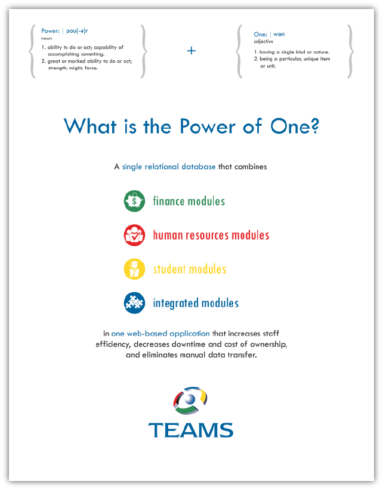
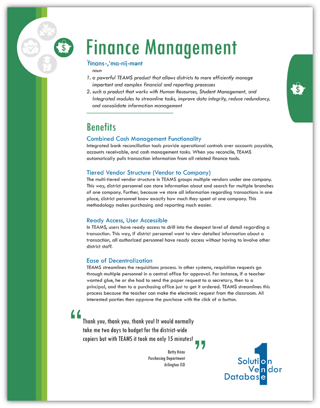
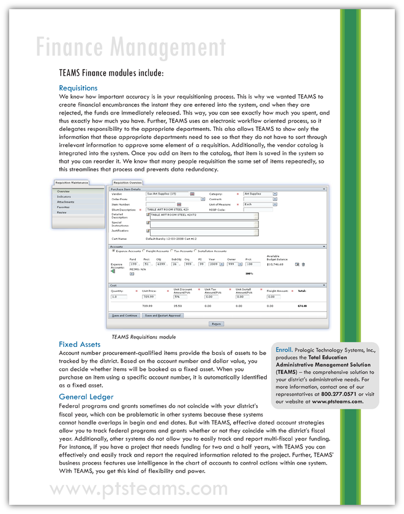
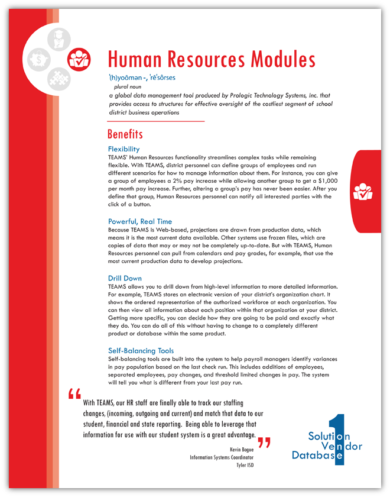
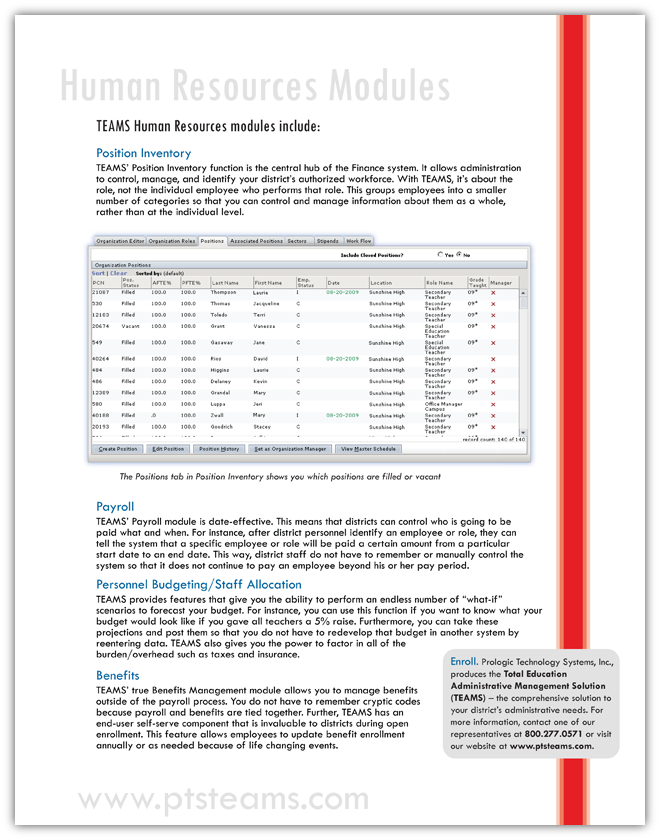
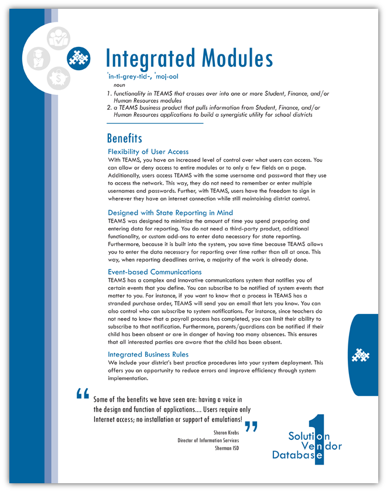
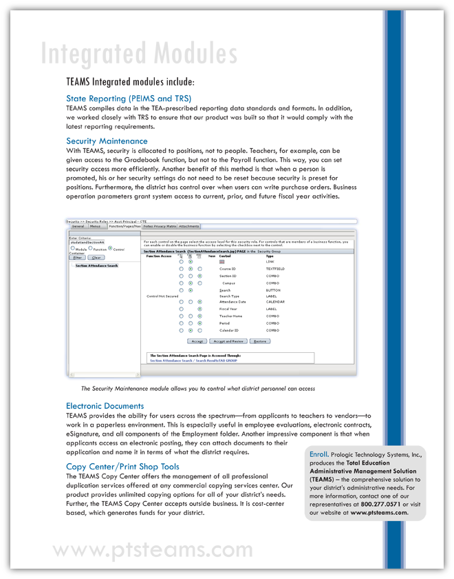
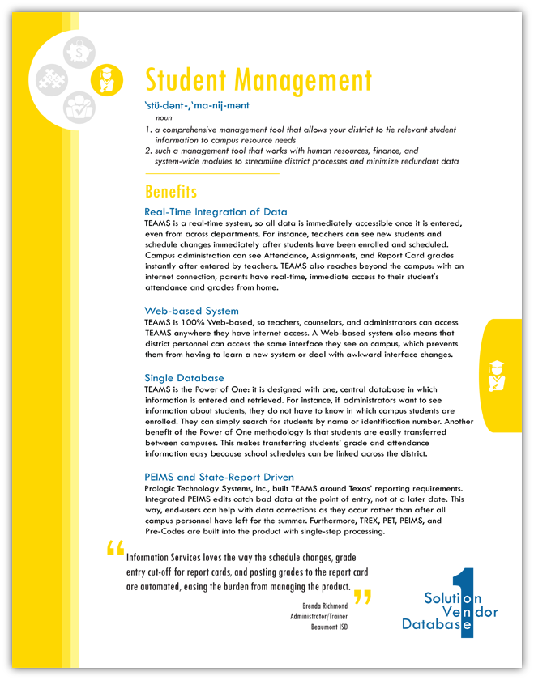
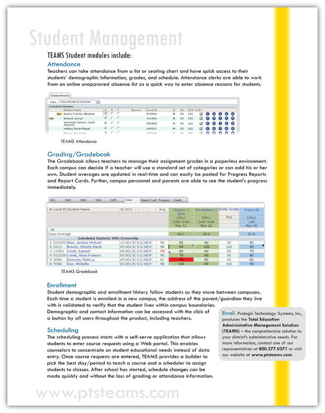
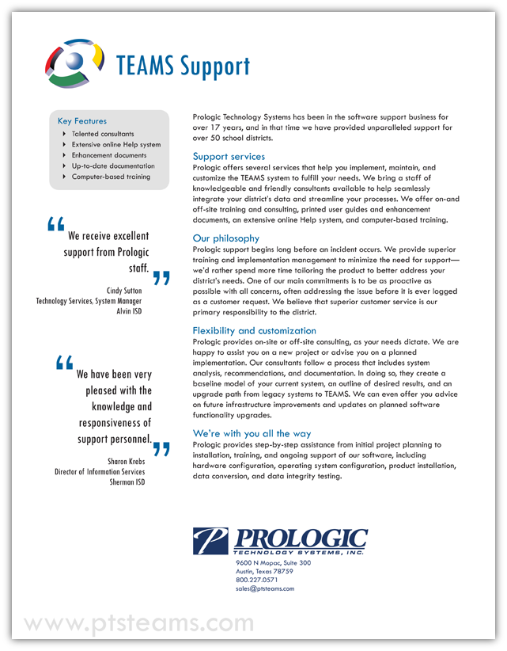
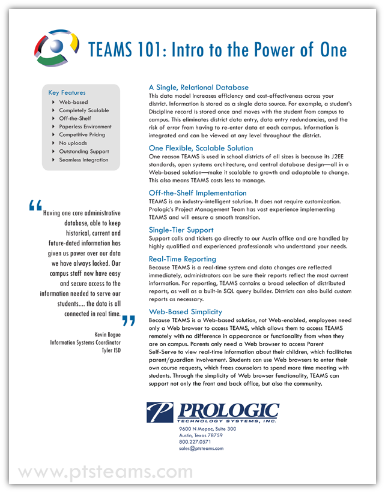
Adobe Illustrator, 2009. |